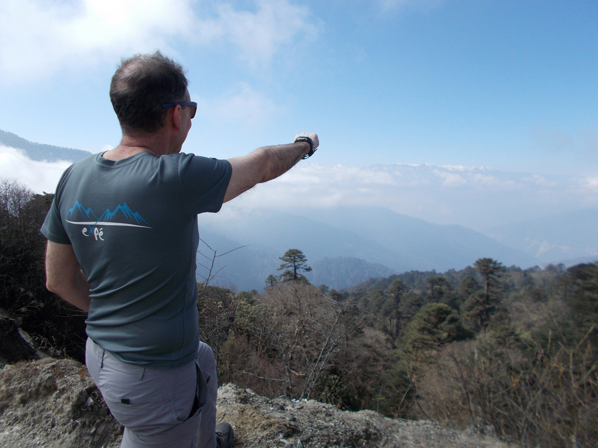

National committee member
-
2023-present President of the section Solid Earth (CNES-TOSCA)
-
2020-present Member Commission Spécialisée – Terre Solide (CS-TS CNRS)
-
2019-2023 Elected member Commission nationale CNAP section Terre Interne.
-
2019-2023 Member section Solid Earth (CNES-TOSCA)
Research Grant and Scholarship reviewer
-
French Centre National de Recherche Scientifique (CNRS–INSU)
-
French Projet Emergence ville de Paris
-
French Ministère de l’enseignement supérieure de la recherche et de l’innovation (PHC)
-
French Centre National d’Etudes Spatiales (CNES–TOSCA)
-
French Agence Nationale de la Recherche (ANR)
-
US National Science Foundation (NSF)
